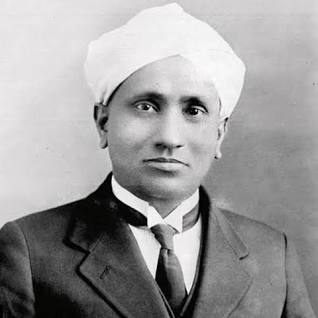

A Tribute to
C. V. Raman
1888-1970
Sir Chandrasekhara Venkata Raman
FRS (7 November 1888 – 21 November 1970) was an Indian physicist known for his work in the field of light scattering.[2] Using a spectrograph that he developed, he and his student K. S. Krishnan discovered that when light traverses a transparent material, the deflected light changes its wavelength and frequency. This phenomenon, a hitherto unknown type of scattering of light, which they called "modified scattering" was subsequently termed the Raman effect or Raman scattering. Raman received the 1930 Nobel Prize in Physics for the discovery and was the first Asian to receive a Nobel Prize in any branch of science.[3]
Born to Tamil Brahmin parents, Raman was a precocious child, completing his secondary and higher secondary education from St Aloysius' Anglo-Indian High School at the age of 11 and 13, respectively. He topped the bachelor's degree examination of the University of Madras with honours in physics from Presidency College at age 16. His first research paper, on diffraction of light, was published in 1906 while he was still a graduate student. The next year he obtained a master's degree. He joined the Indian Finance Service in Calcutta as Assistant Accountant General at age 19. There he became acquainted with the Indian Association for the Cultivation of Science (IACS), the first research institute in India, which allowed him to carry out independent research and where he made his major contributions in acoustics and optics.
In 1917, he was appointed the first Palit Professor of Physics by Ashutosh Mukherjee at the Rajabazar Science College under the University of Calcutta. On his first trip to Europe, seeing the Mediterranean Sea motivated him to identify the prevailing explanation for the blue colour of the sea at the time, namely the reflected Rayleigh-scattered light from the sky, as being incorrect. He founded the Indian Journal of Physics in 1926. He moved to Bangalore in 1933 to become the first Indian director of the Indian Institute of Science. He founded the Indian Academy of Sciences the same year. He established the Raman Research Institute in 1948 where he worked to his last days.
The Raman effect was discovered on 28 February 1928. The day is celebrated annually by the Government of India as the National Science Day. In 1954, the Government of India honoured him with the first Bharat Ratna, its highest civilian award. He later smashed the medallion in protest against Prime Minister Jawaharlal Nehru's policies on scientific research.
To know more click here